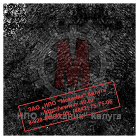
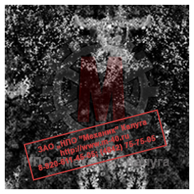
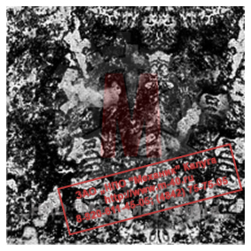

Позвонить: (4842) 75-75-05
Написать сообщение: m-40@inbox.ru

Чугун серый
Марочник сталей и сплавов
Серый чугун назван так по виду излома, имеющего серый цвет. Но само название серый чугун не совсем корректно распространилось на литейный чугун,
в структуре которого имеются включения пластинчатого графита. Эта ошибка была закреплена даже на уровне государственного стандарта ГОСТ 1412-85.
Именно поэтому чугун с пластинчатым графитом так и продолжают называть серым чугуном. В то же время, первоначальный признак,
благодаря которому серый чугун получил своё название - серый цвет, можно наблюдать, например, у ковкого чугуна.
Серый цвет чугуна зависит от количества свободного графита, а не от формы графитных включений в чугуне. В классификации и названиях чугунов существует
историческая путаница, которая особенно сильно наблюдается и мешает при работе с иностранными источниками научно-технической информации.
Цифры в марке серого чугуна – значение предела прочности в, кгс/мм2.
Структура
При оценке структуры серого чугуна определяют размеры включений графита в мкм, их распределение и количество в процентах, а также вид структуры
металлической основы и дисперсность перлита при его наличии.
По строению металлической основы серые чугуны разделяют на перлитные, феррито-перлитные и ферритные (см. Рисунок 1).
При оценке структуры серого чугуна определяют размеры включений графита в мкм, их распределение и количество в процентах, а также вид структуры
металлической основы и дисперсность перлита при его наличии.
По строению металлической основы серые чугуны разделяют на перлитные, феррито-перлитные и ферритные (см. Рисунок 1).
|
 |
 |
 |
| Перлитная | Феррито-перлитная | Ферритная |
| Рисунок 1. Строение металлической основы серого чугуна | ||


Для обозначения компонентов структуры серого чугуна применяют условные обозначения по ГОСТ 3443-87. Так, пластинчатый графит в сером чугуне обозначается буквами ПГ. Формы включений графита в структуре серого чугуна могут быть следующих видов:
- Пластинчатая прямолинейная - ПГф1;
- Пластинчатая завихренная - ПГф2;
- Игольчатая - ПГф3;
- Гнездообразная - ПГф4.
Структура чугуна имеет важнейшее значение для получения заданных свойств отливки, поэтому необходимо точное соблюдение технологических режимов
плавки и заливки. Операция модифицирования помогает получить заданную структуру серого чугуна и избавиться от дефектов.
На сегодняшний день существует более 500 действующих типов различных модификаторов для чугуна, которые состоят из двух-трёх, а иногда и до 15 компонентов.
Способы обработки модификаторами чугуна разнообразны. К ним относятся: печные и внепечные способы обработки расплава, например, обработка
порошковой проволокой с модификатором, обработка модифицирующими брикетами и т.п.
Свойства
Свойства серого чугуна обеспечили ему широкое применение в машиностроении. Кристаллизуется он при довольно низких температурах, дает малую усадку,
в жидком состоянии сохраняет высокую текучесть. Его литейные свойства оцениваются как высокие. Серый чугун служит основным материалом для цилиндров
и поршней самых разных механизмов, станин станков и пр.
Данный вид чугуна склонен к растрескиванию при сварке, что обуславливает необходимость проявления особой осторожности при работе с заготовками.
На практике, при сварке довольно часто прибегают к отбеливанию чугуна, что с одной стороны, делает его более твердым, а с другой, исключает
всякую возможность его механической обработки.
Существуют и такие сорта серого чугуна, которые вообще сварке не подлежат. В частности, т.н. горелый чугун, который претерпел длительное воздействие
повышенных температур, был обработан кислотами или горячим паром.
Графитизация чугуна напрямую связана с наличием в нем следующих основных элементов:
-
Углерод - чем выше процент содержания углерода в сером чугуне, тем он менее прочен, тверд и упруг. Углерод способствует повышению циклической
вязкости и пластичности. Т.е. достижение прочности уменьшает литейные свойства чугуна. Оптимальный процент углерода в составе серого чугуна 2,4..4,2%.
-
Кремний - оказывает точно такое же влияние на процесс графитизации, как и углерод. Но при этом он способен кардинальным образом изменять механические
свойства серого чугуна, так как образует твердое соединение с ферритом и повышает его твердость уменьшая вязкость. Увеличение концентрации кремния в сплаве
приводит к росту графитовых включений и объема феррита.
При этом уменьшаются показатели прочности чугуна и его пластичность из-за образования силикоферрита. По мере увеличения процента вхождения кремния твердость
сначала понижается, а затем снова возрастает, благодаря образованию силикоферрита. Как правило, способность кремния и
углерода изменять механические характеристики чугуна рассматривают совместно, и с этой целью принимают во внимание их суммарное содержание. В процессе
более точных расчетов определяют так называемый углеродный эквивалент.
-
Сера - эвтектика Fe-FeS обладает способностью уменьшать показатели пластичности и прочности серого чугуна за счет ослабления границ зерен,
а также способствовать перлитизации его структуры. Благодаря этому растут твердость и прочность ферритного и ферритно-перлитного сплавов, которые
становятся более износостойкими.
-
Марганец - имеет обыкновение замедлять графитизацию, легировать феррит, размельчать перлит и способствовать появлению свободных карбидов. При
взаимодействии с серой этот элемент нивелирует ее вредное воздействие. Именно по этой причине процентное содержание марганца в сером чугуне
бывает продиктовано содержанием серы. Малосернистые чугуны, соответственно, содержат меньший процент марганца.
-
Фосфор - роль этого элемента заключается в том, чтобы легировать феррит, облегчать размельчение зерна и образовывать включения фосфидной эвтектики. Чем
больше фосфора содержится в сером чугуне, тем он более твердый и износостойкий.
-
Хром - повышение содержания хрома в чугунных отливках приводит к росту их твердости и прочности, однако наиболее явно этот процесс прослеживается
у модифицированного чугуна. Способность хрома замедлять графитизацию делает его карбидообразующим элементом. Тонкие сечения при увеличении вхождения
хрома демонстрируют более явное увеличение твердости, нежели толстые.
-
Никель - способен нивелировать механические характеристики чугунных отливок различной толщины. В случаях, когда процентное содержание никеля в сером
чугуне превышает 3%, отливки демонстрируют одинаковые показатели прочности при толщине стенок в диапазоне 22..88 мм. С увеличением вхождения никеля
на 1% показатели твердости серого чугуна растут примерно на 10НВ. Одновременно растет способность чугуна противостоять коррозии и агрессивным щелочным
средам. Никель способствует улучшению обрабатываемости серого чугуна и его герметичности, благодаря ему графит обретает благоприятную
форму с одновременным уменьшением величины зерен.
-
Молибден - делает чугун более износостойким. Одновременно с этим он замедляет графитизацию и считается активным карбидообразующим веществом, приводит к увеличению твердости и прочности серого чугуна.
Каждый дополнительный процент молибдена увеличивает прочность на 1 кг/мм2. Характерно, что при этом ударная вязкость не снижается, а наоборот, возрастает.
При высоких температурах молибден укрепляет прочность чугуна, и наиболее эффективного результата можно достичь при концентрации в пределах 1,9%. Более высокое
содержание молибдена приводит к образованию ледебурита и снижению прочности.
-
Медь - ускоряет графитизацию и образование перлита. Чем выше процент меди в сплаве, тем меньше
усадка и выше жидкотекучесть серого чугуна. С увеличением вхождения меди растут и его модуль упругости, твердость и прочность.
Медистый чугун лучше поддается обработке, нежели нелегированный. Если добавить медь к чугуну, легированному молибденом, ванадием, хромом, он станет
менее твердым и не столь хрупким. Благодаря меди происходит образование тонкопластинчатого перлита, а стойкость медистого чугуна к коррозии
увеличивается. На показатели прочности на растяжение и твердости существенное влияние оказывает эвтектичность.
-
Олово - способно повышать прочность, твердость и модуль упругости чугуна при содержании его в сплаве до 0,1%. Одновременно с этим растет склонность
серого чугуна к отбелу, и, чтобы избежать подобной ситуации, содержание в нем олова устанавливают на уровне 0,05..0,08%. При выборе между двумя
легирующими элементами - оловом и хромом - рекомендуется отдавать предпочтение олову, т.к. оно сообщает чугуну равномерные показатели твердости по
различным сечениям и уменьшает образования окалины.
-
Сурьма - как и олово, противодействует образованию свободного феррита, но исполняет свою роль более эффективно при содержании в количестве 0,015%.
При этом меньшая концентрация элемента 0,03..0,08% способствует хорошему легированию серого чугуна. Если сурьма содержится в чугуне в концентрации
до 0,1%, прочность его увеличивается вплоть до достижения чисто перлитной структуры. Однако дальнейшее повышение концентрации приводит к снижению
прочности, т. к. сурьма оказывает влияние на процессы кристаллизации металлической основы, но не распределяет графитовые включения и не влияет
на форму. Ударная вязкость при легировании сурьмой снижается. Также повышение процентного содержания сурьмы уменьшает
чувствительность серого чугуна к толщине стенки.
-
Бор - при очень маленьких добавках оказывает графитизирующее воздействие, увеличивает ударную вязкость и стрелу прогиба.
Более высокая концентрация этого элемента приводит к снижению вязко-пластичных свойств и увеличению прочности.
Если подобрать оптимальное соотношение бора и кремния, можно добиться равномерного распределения цементитной сетки на базе перлита, причем в широком
диапазоне толщин стенок и эвтектичности серого чугуна. Существует возможность добиться твердости чугуна на уровне 260НВ, варьируя концентрацией
вводимого бора. Примерно такое же действие на характеристики серого чугуна оказывают добавки бора с алюминием. Промышленное значение легирования
чугуна бором состоит в возможности сообщения ему высоких показателей износостойкости без потери обрабатываемости.
На практике обычно применяют комплексное легирование, когда в серый чугун вводится не один, а сразу несколько различных элементов.
Применение
Серый чугун применяется для изготовления деталей, подверженных незначительным механическим нагрузкам. Серый чугун это дешёвый и наиболее широко
применяемый в машиностроении, сантехнике, строительных конструкциях вид чугуна.
По вопросам изготовления деталей и отливок из серого чугуна обращайтесь в отдел продаж по телефону:
(4842) 75-75-05
Свойства серого чугуна обеспечили ему широкое применение в машиностроении. Кристаллизуется он при довольно низких температурах, дает малую усадку,
в жидком состоянии сохраняет высокую текучесть. Его литейные свойства оцениваются как высокие. Серый чугун служит основным материалом для цилиндров
и поршней самых разных механизмов, станин станков и пр.
Данный вид чугуна склонен к растрескиванию при сварке, что обуславливает необходимость проявления особой осторожности при работе с заготовками.
На практике, при сварке довольно часто прибегают к отбеливанию чугуна, что с одной стороны, делает его более твердым, а с другой, исключает
всякую возможность его механической обработки.
Существуют и такие сорта серого чугуна, которые вообще сварке не подлежат. В частности, т.н. горелый чугун, который претерпел длительное воздействие
повышенных температур, был обработан кислотами или горячим паром.
Графитизация чугуна напрямую связана с наличием в нем следующих основных элементов:
-
Углерод - чем выше процент содержания углерода в сером чугуне, тем он менее прочен, тверд и упруг. Углерод способствует повышению циклической
вязкости и пластичности. Т.е. достижение прочности уменьшает литейные свойства чугуна. Оптимальный процент углерода в составе серого чугуна 2,4..4,2%.
-
Кремний - оказывает точно такое же влияние на процесс графитизации, как и углерод. Но при этом он способен кардинальным образом изменять механические
свойства серого чугуна, так как образует твердое соединение с ферритом и повышает его твердость уменьшая вязкость. Увеличение концентрации кремния в сплаве
приводит к росту графитовых включений и объема феррита.
При этом уменьшаются показатели прочности чугуна и его пластичность из-за образования силикоферрита. По мере увеличения процента вхождения кремния твердость
сначала понижается, а затем снова возрастает, благодаря образованию силикоферрита. Как правило, способность кремния и
углерода изменять механические характеристики чугуна рассматривают совместно, и с этой целью принимают во внимание их суммарное содержание. В процессе
более точных расчетов определяют так называемый углеродный эквивалент.
-
Сера - эвтектика Fe-FeS обладает способностью уменьшать показатели пластичности и прочности серого чугуна за счет ослабления границ зерен,
а также способствовать перлитизации его структуры. Благодаря этому растут твердость и прочность ферритного и ферритно-перлитного сплавов, которые
становятся более износостойкими.
-
Марганец - имеет обыкновение замедлять графитизацию, легировать феррит, размельчать перлит и способствовать появлению свободных карбидов. При
взаимодействии с серой этот элемент нивелирует ее вредное воздействие. Именно по этой причине процентное содержание марганца в сером чугуне
бывает продиктовано содержанием серы. Малосернистые чугуны, соответственно, содержат меньший процент марганца.
-
Фосфор - роль этого элемента заключается в том, чтобы легировать феррит, облегчать размельчение зерна и образовывать включения фосфидной эвтектики. Чем
больше фосфора содержится в сером чугуне, тем он более твердый и износостойкий.
-
Хром - повышение содержания хрома в чугунных отливках приводит к росту их твердости и прочности, однако наиболее явно этот процесс прослеживается
у модифицированного чугуна. Способность хрома замедлять графитизацию делает его карбидообразующим элементом. Тонкие сечения при увеличении вхождения
хрома демонстрируют более явное увеличение твердости, нежели толстые.
-
Никель - способен нивелировать механические характеристики чугунных отливок различной толщины. В случаях, когда процентное содержание никеля в сером
чугуне превышает 3%, отливки демонстрируют одинаковые показатели прочности при толщине стенок в диапазоне 22..88 мм. С увеличением вхождения никеля
на 1% показатели твердости серого чугуна растут примерно на 10НВ. Одновременно растет способность чугуна противостоять коррозии и агрессивным щелочным
средам. Никель способствует улучшению обрабатываемости серого чугуна и его герметичности, благодаря ему графит обретает благоприятную
форму с одновременным уменьшением величины зерен.
-
Молибден - делает чугун более износостойким. Одновременно с этим он замедляет графитизацию и считается активным карбидообразующим веществом, приводит к увеличению твердости и прочности серого чугуна.
Каждый дополнительный процент молибдена увеличивает прочность на 1 кг/мм2. Характерно, что при этом ударная вязкость не снижается, а наоборот, возрастает.
При высоких температурах молибден укрепляет прочность чугуна, и наиболее эффективного результата можно достичь при концентрации в пределах 1,9%. Более высокое
содержание молибдена приводит к образованию ледебурита и снижению прочности.
-
Медь - ускоряет графитизацию и образование перлита. Чем выше процент меди в сплаве, тем меньше
усадка и выше жидкотекучесть серого чугуна. С увеличением вхождения меди растут и его модуль упругости, твердость и прочность.
Медистый чугун лучше поддается обработке, нежели нелегированный. Если добавить медь к чугуну, легированному молибденом, ванадием, хромом, он станет
менее твердым и не столь хрупким. Благодаря меди происходит образование тонкопластинчатого перлита, а стойкость медистого чугуна к коррозии
увеличивается. На показатели прочности на растяжение и твердости существенное влияние оказывает эвтектичность.
-
Олово - способно повышать прочность, твердость и модуль упругости чугуна при содержании его в сплаве до 0,1%. Одновременно с этим растет склонность
серого чугуна к отбелу, и, чтобы избежать подобной ситуации, содержание в нем олова устанавливают на уровне 0,05..0,08%. При выборе между двумя
легирующими элементами - оловом и хромом - рекомендуется отдавать предпочтение олову, т.к. оно сообщает чугуну равномерные показатели твердости по
различным сечениям и уменьшает образования окалины.
-
Сурьма - как и олово, противодействует образованию свободного феррита, но исполняет свою роль более эффективно при содержании в количестве 0,015%.
При этом меньшая концентрация элемента 0,03..0,08% способствует хорошему легированию серого чугуна. Если сурьма содержится в чугуне в концентрации
до 0,1%, прочность его увеличивается вплоть до достижения чисто перлитной структуры. Однако дальнейшее повышение концентрации приводит к снижению
прочности, т. к. сурьма оказывает влияние на процессы кристаллизации металлической основы, но не распределяет графитовые включения и не влияет
на форму. Ударная вязкость при легировании сурьмой снижается. Также повышение процентного содержания сурьмы уменьшает
чувствительность серого чугуна к толщине стенки.
-
Бор - при очень маленьких добавках оказывает графитизирующее воздействие, увеличивает ударную вязкость и стрелу прогиба.
Более высокая концентрация этого элемента приводит к снижению вязко-пластичных свойств и увеличению прочности.
Если подобрать оптимальное соотношение бора и кремния, можно добиться равномерного распределения цементитной сетки на базе перлита, причем в широком
диапазоне толщин стенок и эвтектичности серого чугуна. Существует возможность добиться твердости чугуна на уровне 260НВ, варьируя концентрацией
вводимого бора. Примерно такое же действие на характеристики серого чугуна оказывают добавки бора с алюминием. Промышленное значение легирования
чугуна бором состоит в возможности сообщения ему высоких показателей износостойкости без потери обрабатываемости.
На практике обычно применяют комплексное легирование, когда в серый чугун вводится не один, а сразу несколько различных элементов.
Применение
Серый чугун применяется для изготовления деталей, подверженных незначительным механическим нагрузкам. Серый чугун это дешёвый и наиболее широко
применяемый в машиностроении, сантехнике, строительных конструкциях вид чугуна.
По вопросам изготовления деталей и отливок из серого чугуна обращайтесь в отдел продаж по телефону:
(4842) 75-75-05
Серый чугун применяется для изготовления деталей, подверженных незначительным механическим нагрузкам. Серый чугун это дешёвый и наиболее широко
применяемый в машиностроении, сантехнике, строительных конструкциях вид чугуна.
По вопросам изготовления деталей и отливок из серого чугуна обращайтесь в отдел продаж по телефону:
(4842) 75-75-05
| Апрель 2026 | ||||||
| Пн | Вт | Ср | Чт | Пт | Сб | Вс |
| 1 | 2 | 3 | 4 | 5 | ||
| 6 | 7 | 8 | 9 | 10 | 11 | 12 |
| 13 | 14 | 15 | 16 | 17 | 18 | 19 |
| 20 | 21 | 22 | 23 | 24 | 25 | 26 |
| 27 | 28 | 29 | 30 | |||
| Муфты зубчатые в наличии ГОСТ 5006-55 | ||
| Муфты МЗ | ||
| Тип | Цена, руб., с НДС |
Кол-во, шт. |
| МЗ-1 | 9 900 | 203 |
| МЗ-2 | 15 300 | 165 |
| МЗ-3 | 17 300 | 98 |
| МЗ-4 | 26 200 | 29 |
| МЗ-5 | 33 600 | 1 |
| МЗ-6 | 56 700 | 22 |
| МЗ-7 | 78 800 | 20 |
| МЗ-8 | 107 400 | 10 |
| МЗ-9 | 136 500 | 10 |
| МЗ-10 | 180 000 | 6 |
| Муфты зубчатые ГОСТ Р 50895-96 |
||
| Муфты МЗ | ||
| Тип | Цена, руб., с НДС | |
| МЗ-1 | 12 600 | |
| МЗ-2 | 17 300 | |
| МЗ-3 | 21 300 | |
| МЗ-4 | 29 200 | |
| МЗ-5 | 41 600 | |
| МЗ-6 | 62 700 | |
| МЗ-7 | 90 800 | |
| МЗ-8 | 119 400 | |
| МЗ-9 | 152 500 | |
| МЗ-10 | 210 000 | |